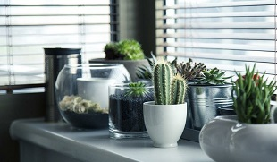
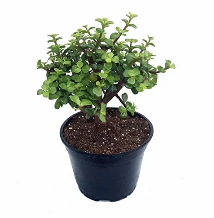
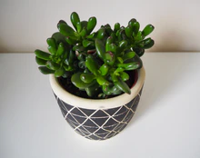
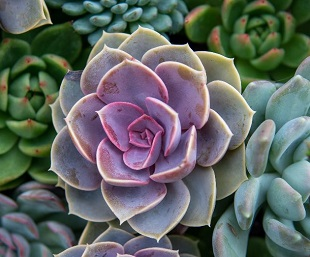
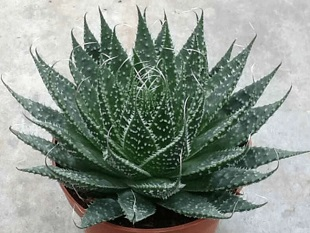
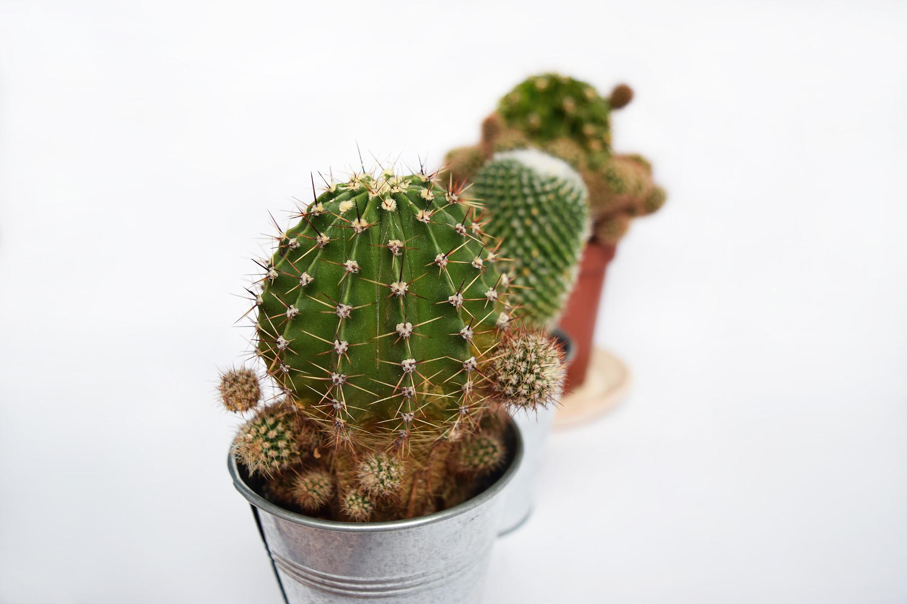

como cuidar una suculenta

Las plantas crasas, destacan por su capacidad de retención de agua y resistencia, por lo tanto, son relativamente fáciles de cuidar aunque no significa que no debamos proporcionarles atención de vez en cuando. Se trata de plantas muy indicadas si nos queremos iniciar en el mundo la jardinería pues nos permiten tener «pequeños descuidos». El cuidado más importante para nuestra planta suculenta o crasa es el riego: deberemos regar nuestra planta cuando el sustrato se encuentre seco, ya que el exceso de humedad puede pudrir las raíces o el tallo de nuestra suculenta. Como ocurre con la mayoría de carnosas, estas plantas crecen en lugares cálidos y no toleraran las heladas, aunque existen excepciones. Recuerda poner tu planta en una zona con mucho sol o un lugar de semisombra y si utilizamos macetas para cultivar nuestra crasa deberemos usar una de barro, ya que retiene menos humedad. También elegiremos un tipo de suelo arenoso o pedregoso, absteniéndonos de usar substratos demasiado arcillosos o con mucha materia orgánica.
Las suculentas según el Feng Shui
De acuerdo con la filosofía del Feng Shui, las suculentas y cactus son ideales para atraer la buena suerte, ya que estas ayudan a equilibrar la energía y el Chi en cualquier espacio, mejorando el flujo de la energía positiva en casa. Según la forma de sus hojas, flores, su aroma y longevidad, estas plantas generan energía al captar los rayos del sol para hacer la fotosíntesis, lo cual se conoce como energía Yang y se transforma en energía Ying por medio de este proceso, trayendo vitalidad, armonía y abundancia.
¿Cuáles son los beneficios de las suculentas según el Feng Shui?
De acuerdo con el Feng Shui, las suculentas o crasas aportan armonía y protección en casa, además de ayudar a purificar la energía negativa y transformarla en energía positiva, es decir, el Ying Yang, a través del proceso del fotosíntesis. Además, este tipo de plantas junto con los cactus, son un elemento decorativo que ayuda a mantener la frescura y humedad de cualquier espacio.
¿Qué tipos de suculentas no pueden faltar en casa?
Aunque existe una gran variedad de suculentas y cactus, algunas de las más populares según el Feng Shui son:
Crassula Portulacaria Afra
Atrae la abundancia y el dinero, la alegría y la buena suerte, ya sea en casa o en el trabajo. Por ello, se debe colocar en espacios con luz indirecta.
Crasulla Ovata
También conocida como jade, esta planta atrae la prosperidad, riqueza y abundancia, es longeva y generalmente se coloca en espacios con semi sombra, ya sea ene interiores o exteriores.
Echeveria
Esta plata de hojas carnosas es un símbolo de protección en el hogar, además de atraer la armonía. Por ello, se puede colocar tanto en interiores como exteriores.
Sábila
También conocida como aloe, esta planta ayuda a alejar las malas vibras y a proteger la casa, por lo que suele colocarse en el exterior o en la entrada de visitas.
Cactus
Los cactus en general son considerados amuleto de fuerza y protección, ya que sus espinas ahuyentan las energías negativas. Por ello, se colocan en lugares abiertos, ventanas, balcones y terrazas.